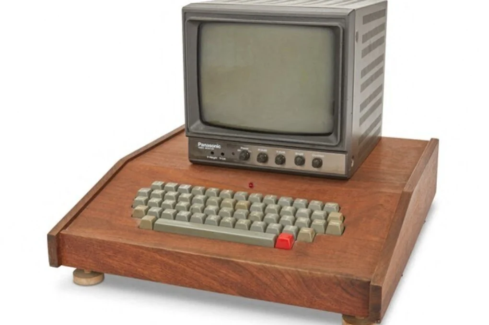
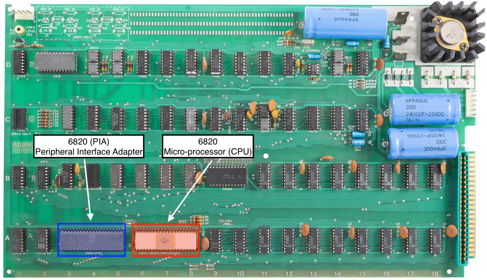
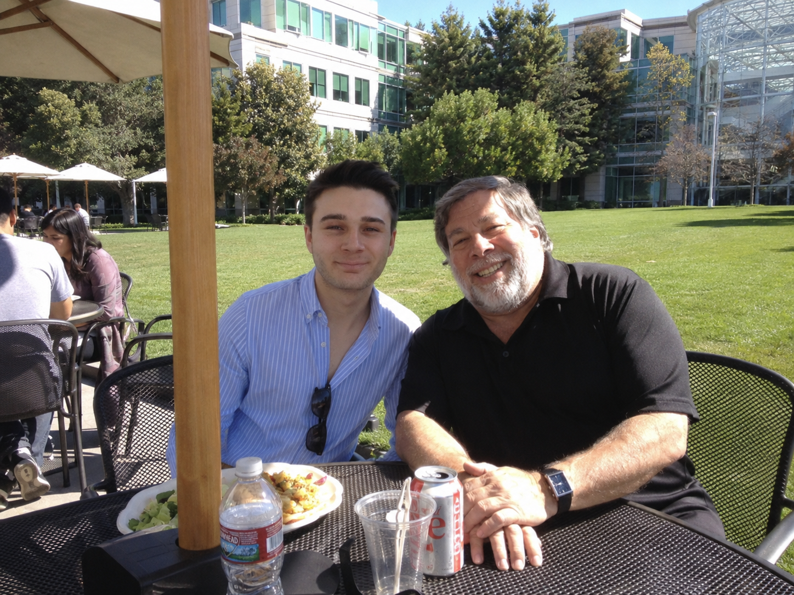
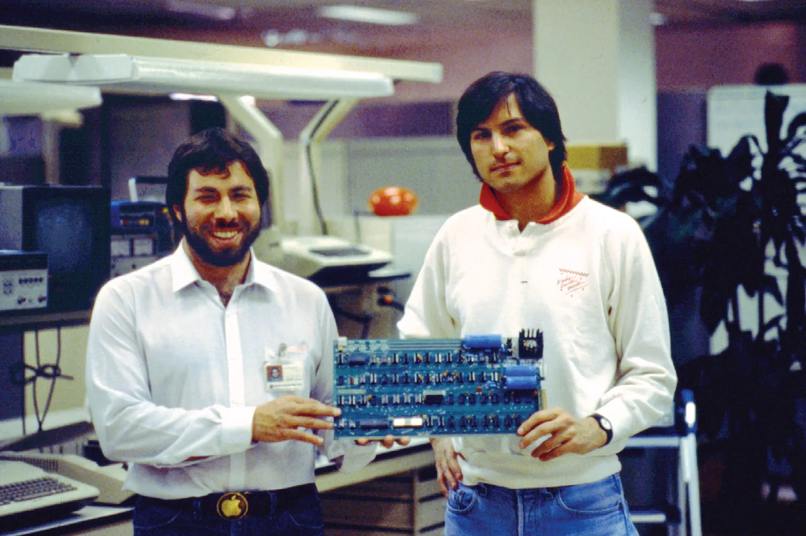

The previous page built the primitives of digital electronics: gates, adders, multiplexers and decoders. A microprocessor is what those primitives become once they are wired together at scale. The MOS Technology 6502, the processor at the centre of the Apple 1 (1976), is built from 3,510 NMOS transistors arranged into a register file, an arithmetic logic unit, an instruction decoder and a control sequencer. This page maps each block onto the gate-level primitives already covered and then exposes the underlying silicon through a transistor-level simulator of the actual die.
The Apple 1 was the first product of the Apple Computer Company, designed by Steve Wozniak and offered for sale in July 1976 at a list price of USD 666.66. It shipped as a populated printed circuit board only. The user supplied a power supply, an ASCII keyboard and a video monitor. About two hundred units were built between July 1976 and September 1977.
The board carried four kinds of integrated circuit. The MOS Technology 6502 microprocessor handled computation. A Motorola 6820 Peripheral Interface Adapter (PIA) connected the processor's bus to the keyboard and the video output. Eight 4-kbit DRAM chips provided 4 kB of system memory. A small PROM held the 256-byte Wozniak Monitor, the only system software the machine had on power-up.
The choice of CPU was driven by price. The Intel 8080 and Motorola 6800 of the same era sold for roughly USD 300 each. MOS Technology introduced the 6502 in September 1975 at USD 25 per unit, cutting the cost of a microprocessor by an order of magnitude and making a personal computer commercially viable for the first time.




The simulator below is Visual 6502, by Greg James, Brian Silverman and Barry Silverman. A real chip was decapsulated, photographed and traced into its 3,510 transistors. The simulator propagates logic levels through that network one half-cycle at a time, so registers, ALU, decoder and control all emerge from the underlying transistors rather than from an abstract instruction-set model.
A small "Hello World" routine is loaded at $\$0000$. Each iteration writes a character to the display register at $\$\text{D012}$ (forwarded to the terminal pane), saves the raw character at $\$\text{E1}$, and increments a counter at $\$\text{E0}$ so the zero-page memtable shows live activity.
Use the controls under the chip to run, stop, step or change speed. With animate on, the logic-state overlay updates every half-cycle, colour-coding clocks, address bus, data bus, registers and decoder. Clicking a polygon names the underlying node in the status panel.
halfcyc:0 phi0:0 AB:0000 D:00 RnW:1
PC:0000 A:00 X:00 Y:00 SP:00 nv-bdizc
Hz: 0.0